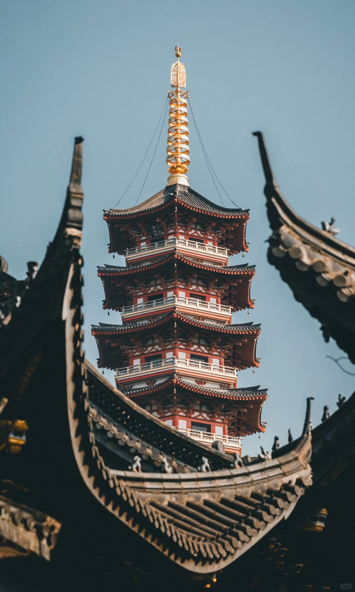
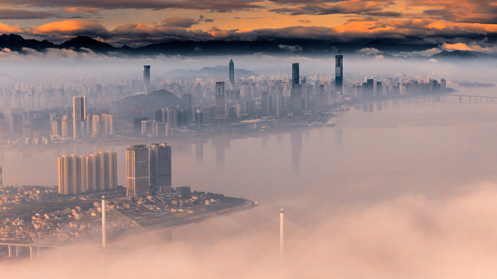
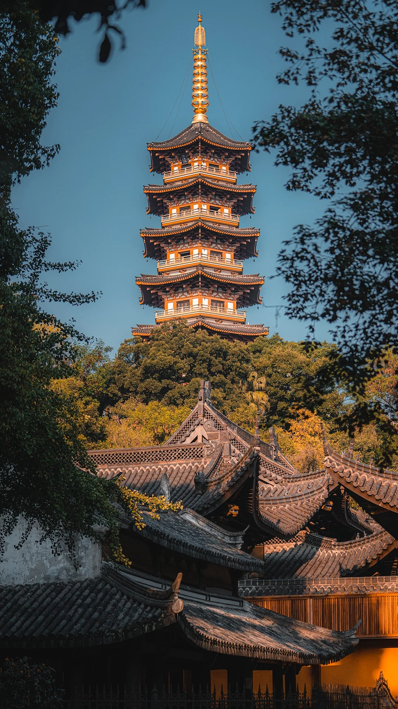
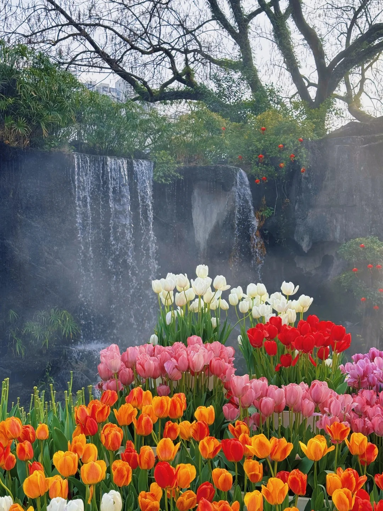
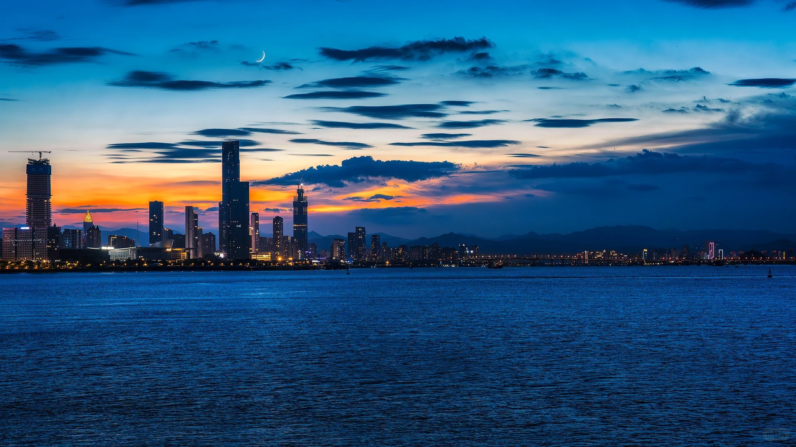
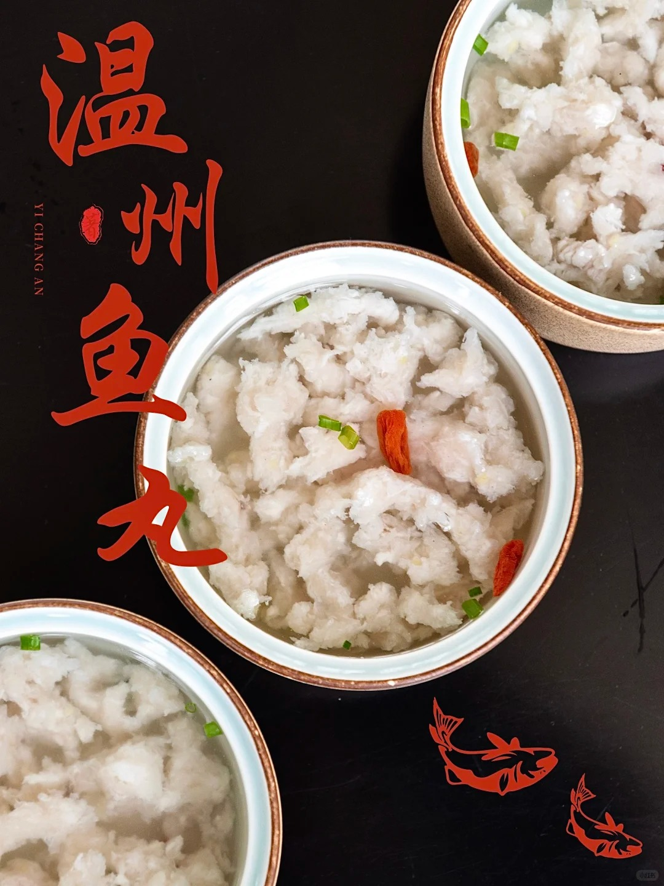

Zhejiang, China
A city of mountains, rivers, and entrepreneurial spirit. Discover the poetry of the Oujiang River and the majesty of Yandang Mountain.

From the misty peaks of Yandang to the tranquil flow of the Nanxi River, Wenzhou's natural beauty has inspired poets for millennia.

Wenzhou City in the Early Morning
Wenzhou City in the Early Morning

Historic Buddhist Temple
Founded in 1008 AD during the Northern Song Dynasty. Home to the legendary "Pig Head Bell" and serves as the seat of Wenzhou Buddhist Association.

Wenzhou's Monet Garden
310,000 tulips across 6,500㎡ of stunning lakeside gardens. Spring's most Instagram-worthy spot with mountain-water landscapes and flower-lined paths. Free entry!

Coastal Landmark
A iconic beacon standing against golden skies, where the East China Sea meets the warm glow of dusk. A perfect spot for photographers and romantics alike.
Wenzhou cuisine, a vital branch of Zhejiang culinary tradition, emphasizes freshness, lightness, and the natural flavors of seafood.
Unlike round fish balls, these are irregular strips of fresh fish paste, offering a unique, chewy texture in a clear, peppery broth.
The quintessential Wenzhou breakfast. Steamed sticky rice topped with savory minced pork sauce and crispy youtiao (fried dough) bits.
Bordering the East China Sea, Wenzhou offers an abundance of incredibly fresh seafood, often simply steamed to preserve its natural sweetness.

Situated on the southeastern coast of Zhejiang Province, Wenzhou is a vibrant port city surrounded by majestic mountains and the East China Sea.
Ask anything about our local culture, food, or current events.
Discover 2,200 years of rich heritage. From the birthplace of Chinese landscape poetry to the cradle of Southern Opera, explore the cultural treasures that shaped this remarkable city.
Birthplace of China's landscape poetry tradition, inspiring poets for millennia with its misty mountains and flowing rivers.
The cradle of Nanxi, one of China's oldest theatrical forms, originating during the Song Dynasty.
A testament to the fierce entrepreneurial spirit that built global commercial networks.
Experience the beauty and charm of Zhejiang's coastal gem.
Discover Wenzhou, where ancient heritage meets modern innovation. From the misty peaks of Yandang Mountain to the bustling streets of the business district, experience a city that has inspired poets and entrepreneurs for millennia.